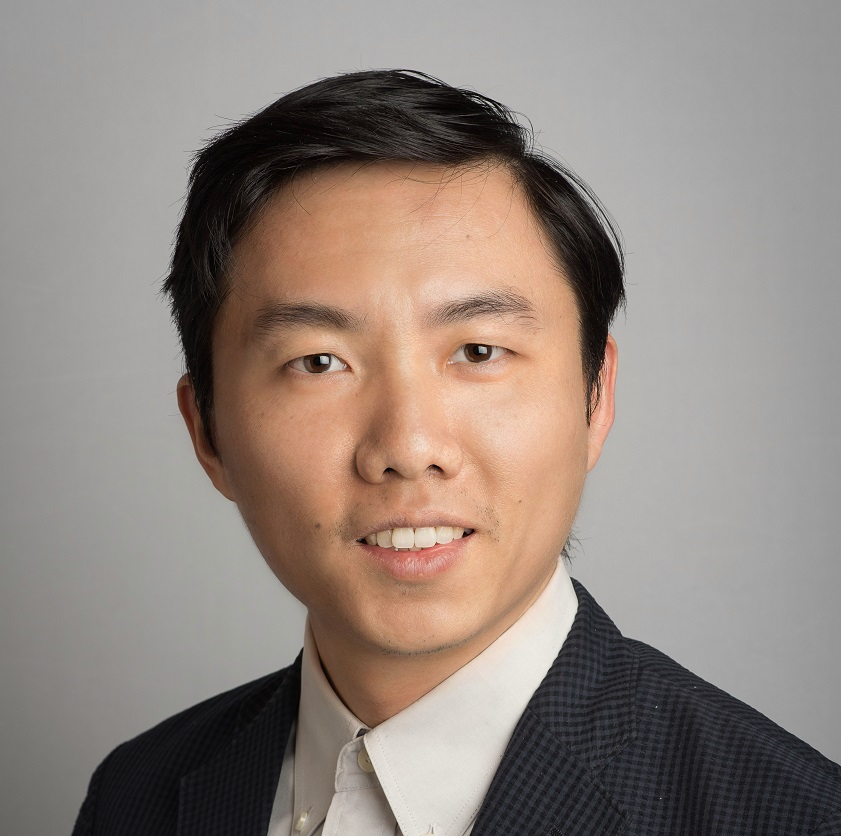
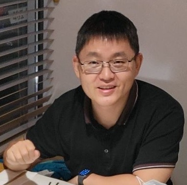
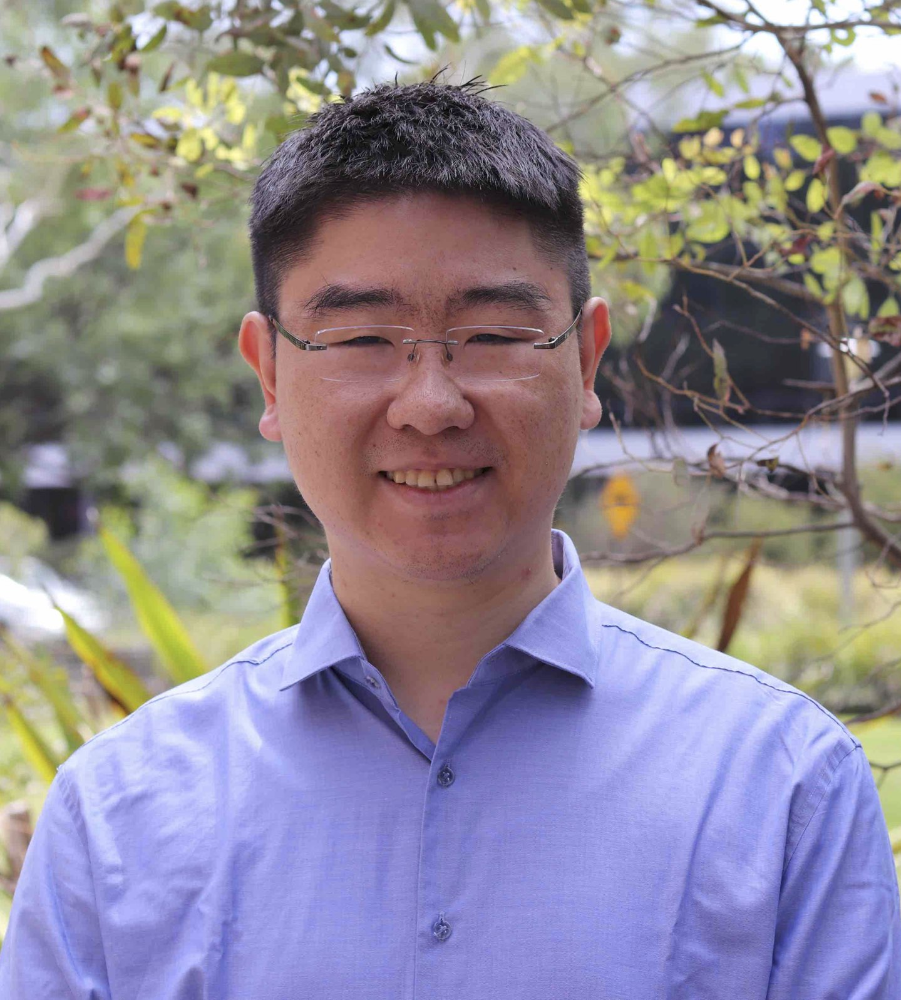
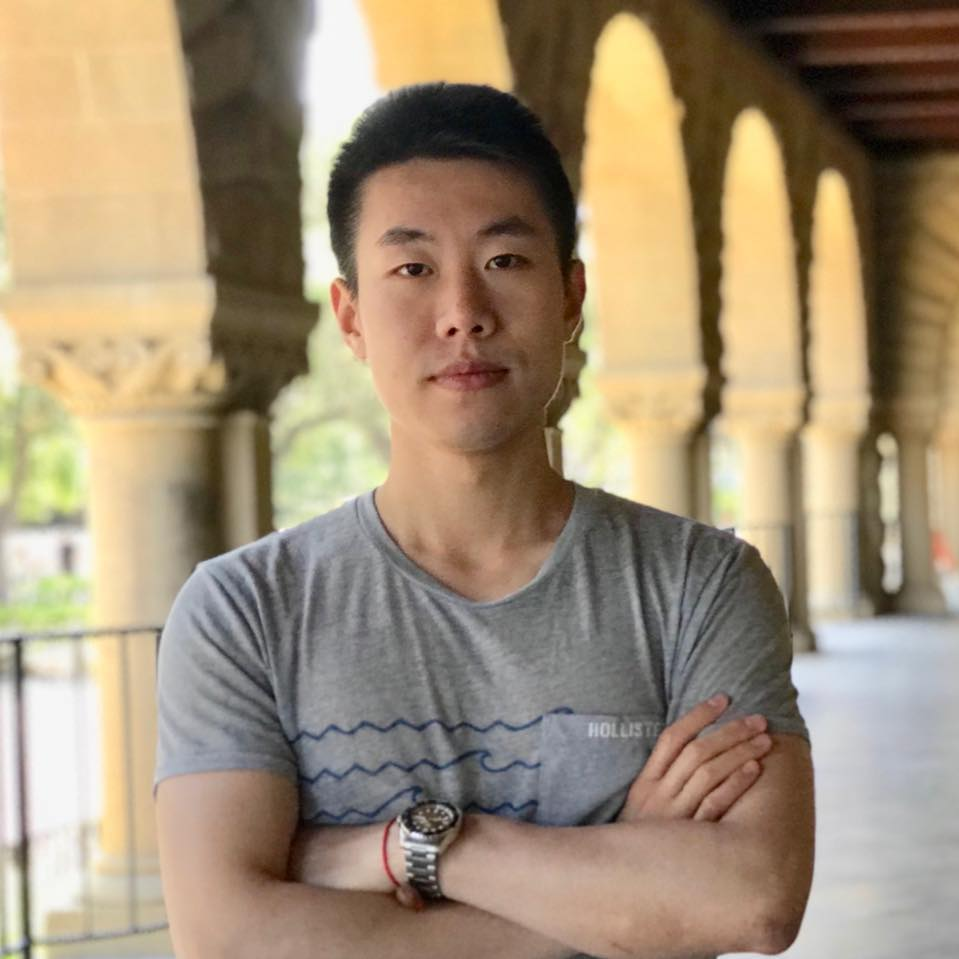
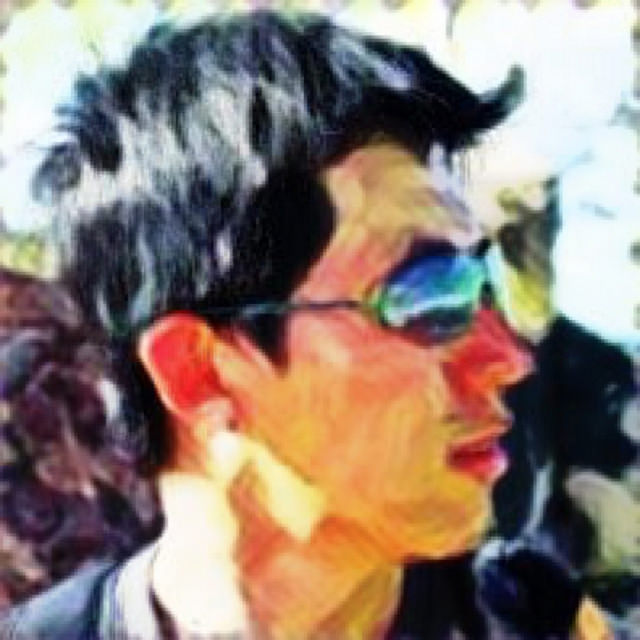

We are honored to host distinguished researchers and industry experts as invited speakers for the workshop.
More speakers will be announced soon. Stay tuned!

Computer Science and Engineering, University at Buffalo, State University of New York
Dr. Junsong Yuan is Professor and Director of Visual Computing Lab at Department of Computer Science and Engineering (CSE), State University of New York at Buffalo, USA. Before joining SUNY Buffalo, he was Associate Professor (2015-2018) and Nanyang Assistant Professor (2009-2015) at Nanyang Technological University (NTU), Singapore. He obtained his Ph.D. from Northwestern University in 2009 (advised by Prof. Ying Wu), M.Eng. from National University of Singapore in 2005, and B.Eng. from Huazhong University of Science Technology (HUST) in 2002. He received Chancellor's Award for Excellence in Scholarship and Creative Activities from SUNY, Nanyang Assistant Professorship from NTU, Outstanding EECS Ph.D. Thesis award from Northwestern University, and Best Paper Award from IEEE Trans. on Multimedia. He serves as Editor-in-Chief of Journal of Visual Communication and Image Representation (JVCI), Associate Editor of IEEE Trans. on Pattern Analysis and Machine Intelligence (T-PAMI), IEEE Trans. on Image Processing (T-IP), IEEE Trans. on Circuits and Systems for Video Technology (T-CSVT), and Machine Vision and Applications (MVA). He also serves as General/Program Co-chair of ICME and Area Chair for CVPR, ICCV, ECCV, ACM MM, etc. He was elected Faculty Senator at Both SUNY Buffalo and NTU. He is a Fellow of IEEE and IAPR.

Senior Manager and Principal Research Scientist, Nvidia
Adjunct Associate Professor, CUHK
Dr. Jinwei Gu is currently a Principal Research Scientist at NVIDIA and an Adjunct Associate Professor at the Chinese University of Hong Kong, working on generative AI, world models, and the general fields of computer vision, computer graphics, and machine learning. He received his Ph.D. in Computer Science from Columbia University in 2010, and B.S. and M.S. from Tsinghua University in 2002 and 2005, respectively. At NVIDIA, Dr. Gu is one of tech leads in cosmos model development – a family of multimodality world foundation models, with a focus on enabling real-world applications in robotics, autonomous driving, and generative AI. Prior to joining NVIDIA, he worked at SenseBrain as a R&D Executive Director, focusing on mobile computational photography with novel image sensors and imaging systems. He has published extensively in top-tier conferences and journals, and serves as an Associate Editor for IEEE Transactions on Pattern Analysis and Machine Intelligence (TPAMI) and IEEE Transactions on Computational Imaging (TCI) (2018-2023), an Area Chair for CVPR, NeurIPS, ICCV, ICCP, and ECCV, and organizing chairs for several workshops (MIPI, RichMediaGAI). He is an IEEE senior member since 2018. His research work has been successfully transferred to many products such as NVIDIA CoPilot SDK, DriveIX SDK, NVIDIA-Cosmos, as well as Super Resolution, Super Night, Portrait Restoration, RGBW solution which are widely used in many flagship mobile phones.

Associate Professor at Australian National University, Research Scientist at Canva
Prof. Liang is an Associate Professor (tenured) and ARC Future Fellow at the School of Computing, Australian National University. He joined ANU in 2018 and held the CS Futures Fellowship and ARC DECRA Fellowship. He is also a researcher (part-time) at Canva. Prof. Liang has broad interest in computer vision especially generative AI. He is working with a group of talented students designing protocols and architectures to discover the underlying patterns and laws of data and algorithms. He received his Ph.D from the Department of Electronic Engineering, Tsinghua University in 2015, and my B.S. from the School of Life Science, Tsinghua University in 2010.

Assistant Professor, National University of Singapore
Prof. Shou is a tenure-track Assistant Professor (Presidential Young Professorship) at National University of Singapore. He was a Research Scientist at Facebook AI in Bay Area. He obtained his Ph.D. degree at Columbia University in the City of New York, working with Prof. Shih-Fu Chang. He received the Best Paper Finalist at CVPR'22 and CVPR'25, Best Student Paper Nomination at CVPR'17, PREMIA Best Paper Award 2023, EgoVis Distinguished Paper Award 2022/23. His team won the 1st place in the international challenges including ActivityNet 2017, EPIC-Kitchens 2022, Ego4D 2022 & 2023. He regularly serves as Area Chair for top-tier artificial intelligence conferences including CVPR, ECCV, ICCV, ACM MM, and is an Associate Editor for IEEE TPAMI. He is a Singapore Technologies Engineering Distinguished Professor and a Fellow of National Research Foundation Singapore. He is on the Forbes 30 Under 30 Asia list.

Principal Engineer / Director, Gooogle
Prof. Liangliang Cao is a Chair Professor of the Department of Data Science and Artificial Intelligence (DSAI) at The Hong Kong Polytechnic University. He received his Ph.D. at the University of Illinois Urbana-Champaign under the supervision of Prof. Thomas S. Huang, and received his M.Phil. degree from the MMLab at The Chinese University of Hong Kong. Before joining PolyU, Liangliang was a Principal Engineer and Director at Google DeepMind. His research interests span computer vision, large language models, speech and multimodal AI, intelligent agents, and AI for education. He has worked on intelligent assistants and AI agents, contributing to Gemini, Google Assistant, Apple Intelligence, IBM Watson, and Switi Inc., a startup he co-founded that was acquired by Google in 2018. More recently, his research has focused on AI assistants for special education, particularly for children with autism. He currently serve as an Associate Editor of IEEE Transactions on Pattern Analysis and Machine Intelligence (TPAMI).